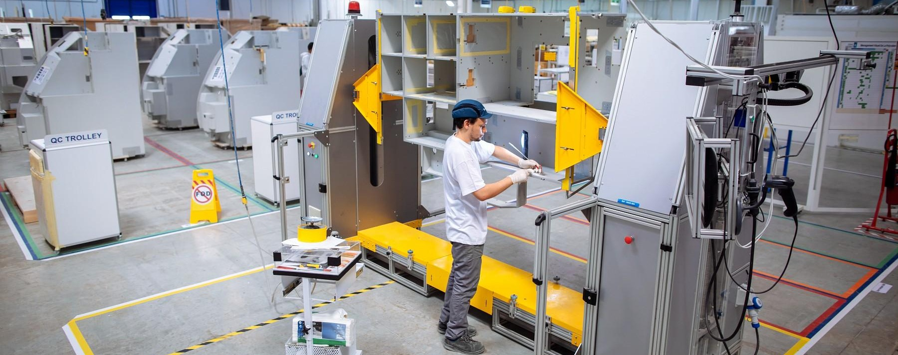

SSE INTERN · FINAL-YEAR THESIS PROJECT
Confined Spaces
& Anoxia Risk Prevention
Identified confined spaces in an aerospace manufacturing environment, assessed associated risks and developed preventive and corrective proposals using a structured DMAIC approach.

*The project proposed actions and reassessed risk levels; implementation by Safran was not confirmed.
Explore the case study＋
My role
Individual final-year thesis project as an SSE Intern, supervised academically and professionally, working with employees, maintenance teams and SSE representatives.
Approach
Defined the scope, assessed frequency, severity and existing controls, built an FMEA/AMDEC-style risk matrix, then proposed corrective and preventive actions.
Deliverables
Risk assessment matrix, action-tracking Kanban board, preventive measures, Poka-Yoke proposals and final report.